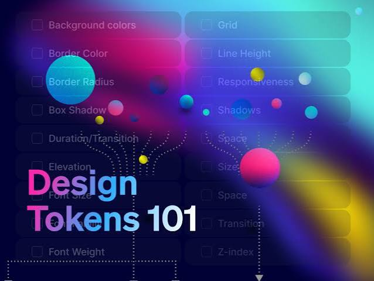
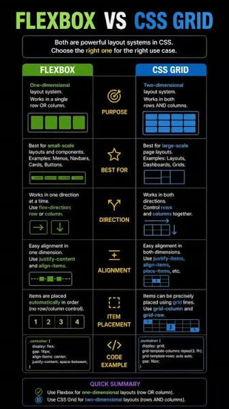

Design System Tokens
Centralized CSS custom properties powering fluid typography, color schemes, and spacing.
Welcome to Module 2 showcase page featuring BEM architecture, CSS Grid, Flexbox, and Custom Properties.

Centralized CSS custom properties powering fluid typography, color schemes, and spacing.

Combining Flexbox for alignment and CSS Grid for macro structural layouts.
:checked pseudo-class to toggle visibility without JavaScript.
prefers-color-scheme and root class variables.
This modal is triggered using CSS :target rule without single line of JavaScript.